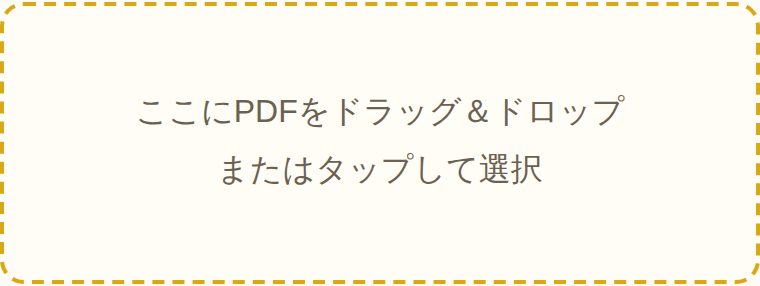
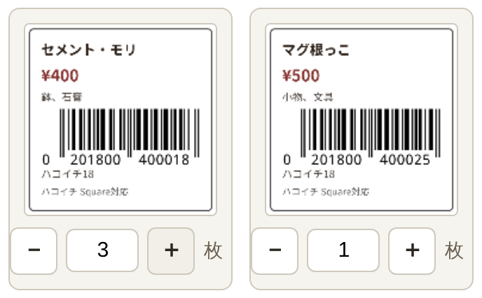
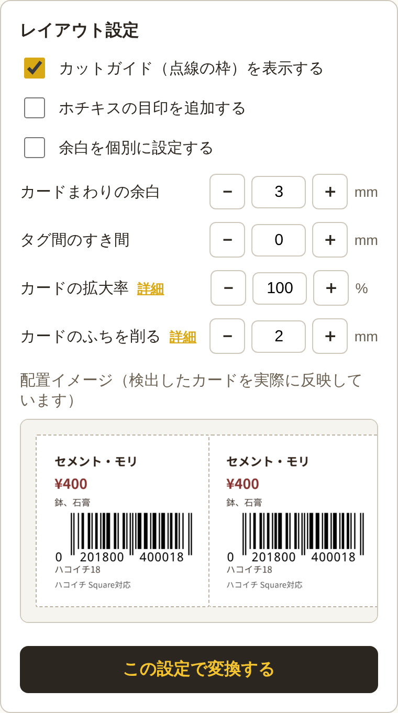
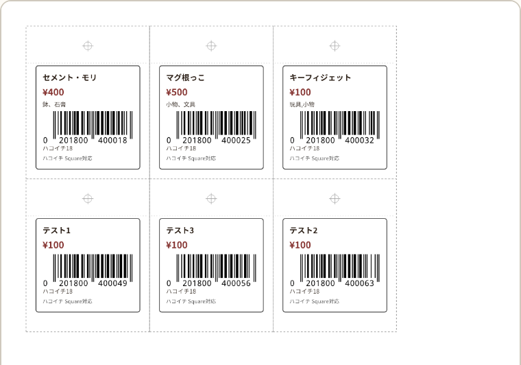
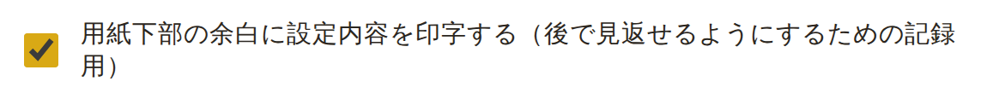
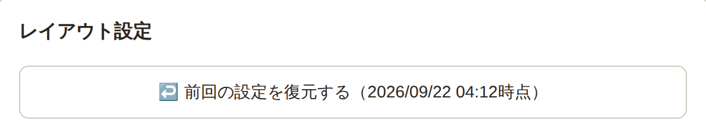
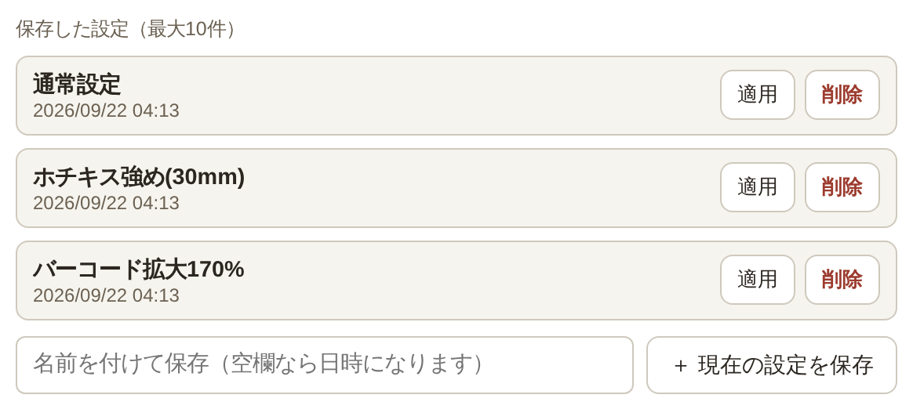

📖 使い方ガイド
ハコイチのバーコードPDFを、ホチキス留めしやすい値札に変える手順です。むずかしい設定は無くても大丈夫、そのままでも使えます。
PDFを選ぶ
ハコイチ管理システムからダウンロードしたバーコードPDFを、ツールの画面にドラッグ＆ドロップするか、タップしてファイルを選びます。

検出されたタグを確認する
商品カードが自動でひとつずつ見つかって、サムネイル（小さい画像）が並びます。同じタグを何枚も欲しいときは＋で枚数を増やし、いらないものは0枚にすれば省けます。

余白はお好みで（そのままでもOK）
カードまわりの余白やタグ同士のすき間を＋－で調整できます。よく分からなければ、初期設定のままで問題ありません。「余白を個別に設定する」にチェックを入れると、上下左右（ホチキスを追加した場合はホチキスの上下も）を別々のmm数で細かく調整できます。「カードの拡大率」でバーコードや文字自体を大きくしたり、「カードのふちを削る」でもとの黒い枠線を消したりもできます（それぞれ項目の横の「詳細」で説明が読めます）。前回このツールを開いたときの設定が残っていれば、「前回の設定を復元する」ボタンで呼び出せます。よく使う設定は「現在の設定を保存」で名前を付けて残しておけます（最大10件、いらなくなったら削除できます）。

「この設定で変換する」を押す
少し待つと、下にプレビューが出ます。⊕マークがホチキスを打つ位置、点線が切り取り線です。ページが複数になる場合は、全ページ分プレビューに表示されます。

ダウンロードして印刷する
「加工済みPDFをダウンロード」ボタンでPDFを保存し、いつも通り印刷してください。あとは⊕マークのところをホチキスで留めれば完成です。用紙の下部には、その回に使った設定内容（余白やすき間の数値など）が自動で印字されるので、あとで見返すときの目安になります。
🔧 もっと使いこなす（応用編）
基本の使い方は上のとおりです。ここから下は、繰り返し使う方向けの機能の説明です。
余白への設定印字はON/OFFできます
変換後のPDFには、用紙下部の余白にその回の設定内容（余白・すき間・拡大率など）が自動で印字され、あとで見返すときの記録になります。不要な場合はレイアウト設定の「用紙下部の余白に設定内容を印字する」のチェックを外せばOFFにできます。

前回の設定を自動で記憶
設定を変えるたびに、このブラウザに自動で保存されます。次にツールを開いたときは「前回の設定を復元する」ボタンが出るので、押せば続きから再開できます（保存はこのブラウザ内だけで、他の端末やブラウザには引き継がれません）。

よく使う設定は名前を付けて保存
「現在の設定を保存」ボタンで、名前を付けて設定を保存できます（最大10件）。一覧の「適用」でいつでも呼び出せて、「削除」で不要なものだけ消せます。自動では増減しないので、残しておきたい設定が知らない間に消えることはありません。

PDFの中身はすべてこのブラウザの中だけで処理されます。どこにも送信されません。
← ツールに戻る